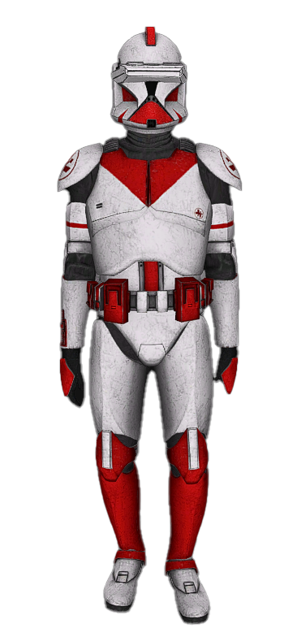
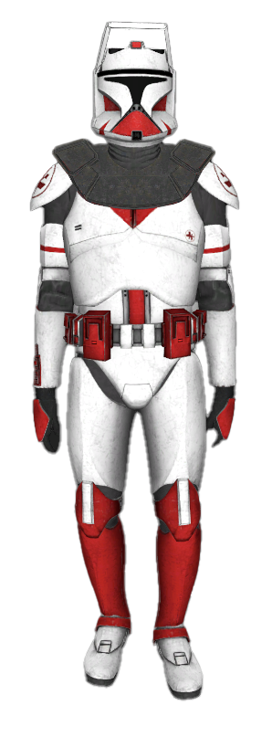
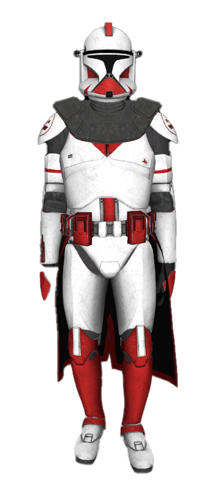
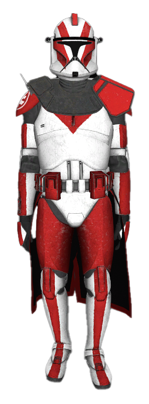
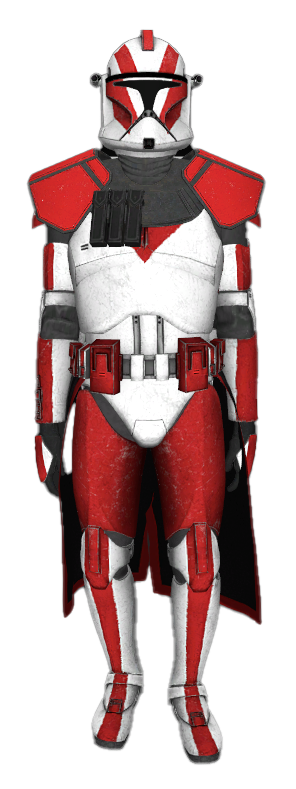
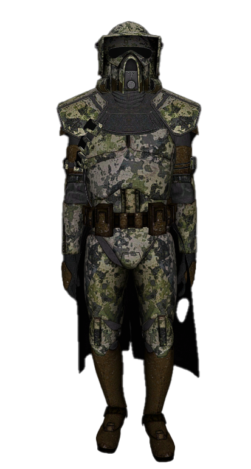

Критерии повышения званий
Практикант ⟶ Интерн
Обязательные критерии:
- Пройти "Вступительное ознакомление"
- Практика по "КОМ"
- Зачёт "Ведение Мед.Карт"
- Лекция "Основы по командованию отрядом"
- Лекция "Положение Дежурной Службы"
- Завести себе "Мед.Карту", если нету
- Зачитать Клятву при повышении
Дополнительные критерии:
- Срок службы в звании - 5
- Участие в 1 Спец.Тренировке (Медицинская подготовка)
- Участие в 1 Санитарной Работе
- Участие в 1 Межлегионной Тренировке / Свободной Тренировке
- Участие в 2 Спецоперациях Мед.Корпуса
- Участие в 1 Стационарном Дежурстве - 30 минут
- Участие в 2 Мед.Деятельностях
- Участие в 1 Сборе "Медицинских Препаратов"

Интерн ⟶ Ординатор
Обязательные критерии:
- Практика "Командование отрядом"
- Зачёт "Любая из тем КОМ"
- Зачёт "Внештатные ситуации"
- Пройти "Курс Ординатуры"
- Лекция "Распределение и командование отрядом на Спец.Операции"
Дополнительные критерии:
- Срок службы в звании - 10
- Участие в 1 Тренировке по оказанию Стационарного Лечения
- Участие в 1 Санитарной Работе
- Участие в 1 Свободном Дежурстве - 30 минут
- Участие в 2 Межлегионных Тренировках
- Участие в 3 Спецоперациях Мед.Корпуса
- Участие в 2 Спец.Тренировках
- Участие в 2 Тренировках по ПМП
- Участие в 2 Медицинских Деятельностях
- Участие в 1 Сборе "Медицинских Препаратов"

Ординатор ⟶ Старший Ординатор
Обязательные критерии:
- Зачёт "Командование отрядом"
- Зачёт "Порядок развертывания полевого госпиталя"
- Зачёт "Положение о несении дежурства по медицинскому блоку"
- Зачёт "Работа в паре с военврачом"
Дополнительные критерии:
- Срок службы в звании - 15
- Участие в 1 Тренировке по Раневому Лечению
- Участие в 2 Спецоперациях
- Участие в 1 Санитарной Работе
- Участие в 2 Свободных Дежурствах - 30 минут
- Участие в 2 Межлегионных Тренировках
- Участие в 1 Сборе "Медицинских Препаратов"
Старший Ординатор ⟶ Военофельдшер
Обязательные критерии:
- Зачёт "Работа в паре с военврачом"
- Зачёт "Сложные ситуации в медицинской практике"
- Зачёт "Участие в учениях"
Дополнительные критерии:
- Срок службы в звании - 15
- Провести 2 санитарные работы
- Участие в 2 тренировках по ПМП
- частие в 2 тренировках по оказанию стационарного лечения
- Провести 4 специализированные тренировки
- Участие в 4 спецоперациях Мед.Корпуса
- Участие в 1 Сборах "Медицинских Препаратов"
- Поставить 1 раз на "Патрульно постовую службу

Военофельдшер ⟶ Старший Военфельдшер
Дополнительные критерии:
- Срок службы в звании - 15
- Провести 2 санитарные работы
- Провести 5 медицинских деятельностей
- Провести 3 тренировоки по ПМП
- Провести 3 тренировки по оказанию стационарного лечения
- Провести 3 специализированные тренировки
- Проведение/помощь в проведение 2 агитаций"
- Участие в 4 межлегионных тренировках
- Участие в 6 спецоперации мед.корпуса
- Провести 1 Сбора "Медицинских Препаратов
Старший Военфельдшер ⟶ Врач
Обязательные критерии:
Дополнительные критерии:
- Срок службы в звании - 15
- Провести 2 санитарные работы
- Провести 5 медицинских деятельностей
- Провести 5 тренировок по ПМП
- Провести 5 тренировок по оказанию стационарного лечения
- Проведение/Помощь в проведение 2 агитаций
- Провести 5 специализированных тренировок
- Участие в 6 спецоперации мед.корпуса
- Провести 1 Сбора "Медицинских Препаратов
- Участие в 4 межлегионных тренировок

Врач ⟶ Хирург
Обязательные критерии:
Дополнительные критерии:
- Срок службы в звании - 30
- Провести 7 медицинских деятельностей
- Провести 6 тренировок по ПМП
- Провести 5 тренировок по оказанию стационарного лечения
- Провести 5 специализированных тренировок
- Встать на должность КМДО/КМДБ 2 раз
- Проведение/помощь в проведение 2 агитаций

Критерии повышения на Полевой Санитар/Врач
Обязательные критерии:
- Лекция I 一 Основы оказания П/п, перечень препаратов/снаряжение полевого отдела.
- Лекция II 一 Кровотечение, раны.
- Лекция III 一 Отравления, Ожоги, Бластерные ранения, Обморожения.
- Лекция IV 一 Переломы, Вывихи, Травматический шок, Пневмоторакс, ЧМТ.
- Примечание:После лекции и подготовки, проводится практика по пройденной теме.
Дополнительные критерии:
- 1 час патрульной постовой службы
- Участие в 1 свободной тренировке
- Участие в 1 тренировке по оказанию первой медицинской помощи
- Участие в 1 специализированной медицинской тренировке
- Участие в 2 мед. деятельностях
- Участие в 2 спец. операциях
